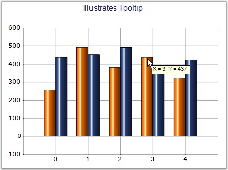

Sets the tooltip of the style object associated with the series.
|
Details | |
|
Possible Values |
Any string value |
|
Default Value |
Nil |
|
2D / 3D Limitations |
No |
|
Applies to Chart Element |
Any Series |
|
Applies to Chart Types |
Scatter Chart, Hilo Open Close Chart(3D),Column Charts, BarCharts, Bubble Chart,Line Charts, BoxandWhisker Chart, Tornado Chart, Combination Chart, Gantt Chart,Candle Chart, HiLo Chart(3D), PolarAndRadar, PieChart,Accumulation Charts, Area Charts |
Property
Table 1: Property Table
|
Property |
Description |
Type |
Data Type |
Reference links |
|
ShowToolTips |
Specifies whether tooltip has to be displayed. |
Server side |
Boolean |
NA |
Here is sample code snippet using ToolTip in the Column Chart.
Series Wide Setting
|
[C#]
this.ChartWebControl1.ShowToolTips = true; series1.PointsToolTipFormat = "{1}"; series1.Style.ToolTip = "Tooltip of Series1"; |
|
[VB.NET]
Me.ChartWebControl1.ShowToolTips = True series1.PointsToolTipFormat = "{1}" series1.Style.ToolTip = "Tooltip of Series1" |

Figure 214: ToolTip set for Chart Series
Specific Data Point Setting
ToolTip can be applied to individual points of a Series.
|
[C#]
for (int i = 0; i < series1.Points.Count; i++) { series1.Styles[i].ToolTip = string.Format("X = {0}, Y = {1}", series1.Points[0].X.ToString(), series1.Points[i].YValues[0]); } |
|
[VB]
Dim i As Integer = 0 Do While i < series1.Points.Count series1.Styles(i).ToolTip = String.Format("X = {0}, Y = {1}", series1.Points(0).X.ToString(), series1.Points(i).YValues(0)) i += 1 Loop |

Figure 215: ToolTip set for Data Point in the Series
See Also
Column Charts, Bar Charts, Area Charts, Histogram Chart, Tornado Chart, Polar and Radar Chart, Pie Chart, Three Line Break Chart, Box and Whisker Chart, Renko chart, Line Chart, Spline Chart, Step line Chart, Kagi Chart, Bubble And Scatter Chart